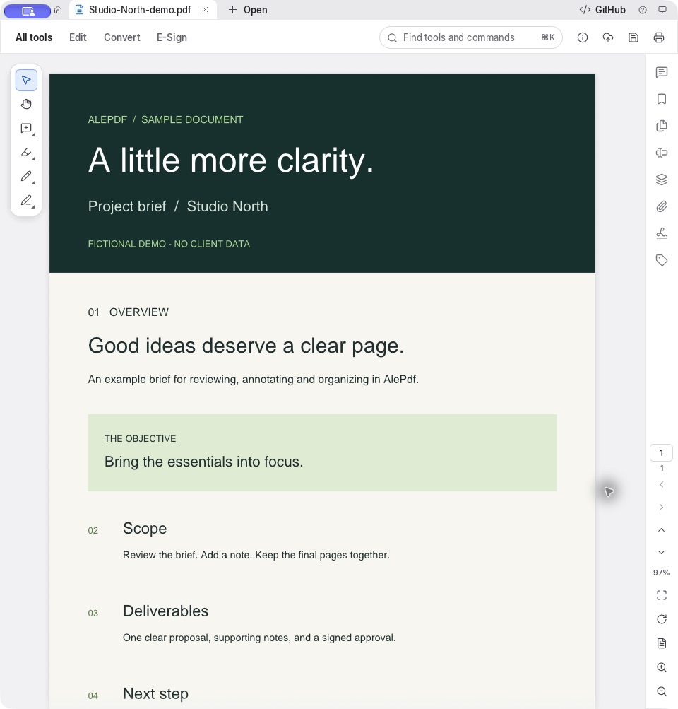
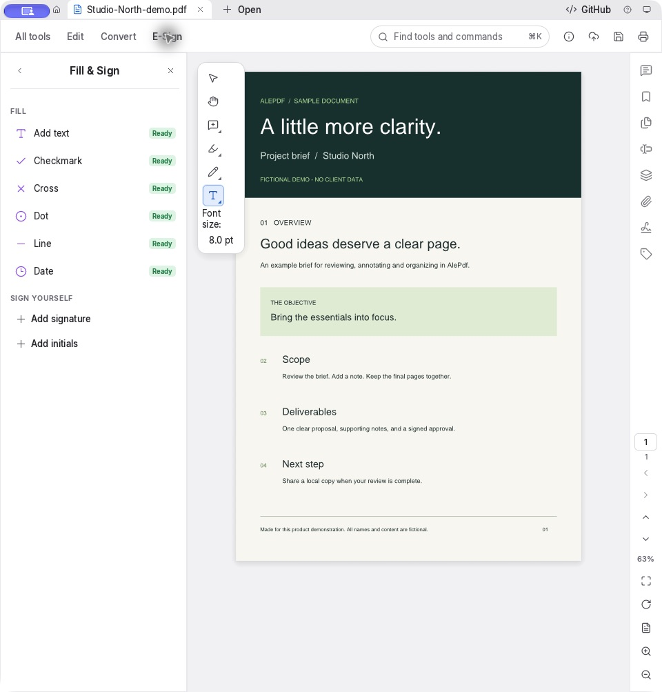

Read with focus.
Navigate pages, adjust the view, and find your way around a document without leaving your desktop.
PDF viewingNATIVE DESKTOP APP · LOCAL FIRST
From the first read to the final signature. Bring your everyday PDF work together in a focused desktop workspace.
Windows x64 preview · Mac signing pending · Open-source foundation
Your document. Your workflow.
A little less friction.

LESS SWITCHING. MORE DOING.
A practical set of PDF tools, with availability shown inside the app. Some advanced tools are still in development.
Navigate pages, adjust the view, and find your way around a document without leaving your desktop.
PDF viewingHighlight what matters, draw on the page, or leave a sticky note for your next review.
AnnotationsOrganize your document with the app’s page tools. Keep the right pages together for the next step.
Page organization
THE FINISHING TOUCH
Add text, a date, a checkmark, a signature, or your initials right where you need them.
Fill & Sign is part of the desktop workflow. It does not require a Google Form or an AlePdf account.
Visual signatures are not a hosted signing service. This page makes no claim of identity verification, an audit trail, or legal certification.
A few useful answers ↓LOCAL BY DEFAULT
Core PDF work happens on your computer. You choose when a document leaves it.
Opening and working with local PDFs does not need an account. Optional cloud providers can involve external processing. Saving to a Google Drive folder writes a local copy; Google Drive’s desktop app handles any later sync.
When a file name already exists, the preview lets you choose Replace, Keep both, or Cancel.
CHOOSE YOUR PLATFORM
Native PDF tools for your desktop.
Mac distribution is paused until Developer ID signing and Apple notarization are complete. The unsigned Windows x64 preview is available below.
Apple Silicon · .dmg
Apple cannot verify this ad-hoc preview. A normal Mac download will be offered after Developer ID signing and notarization. Do not bypass macOS security protections.
Latest source & changes ↗Windows x64 · .exe installer
Unsigned preview. Home-tool entry and image replacement regression tests, installation, CLI, GUI startup and uninstall checks passed on the Windows runner. Manual interactive editing on Windows has not been tested. Windows may block an unrecognized publisher; do not disable security protections.
SHA-256 checksums ↗AFTER A SIGNED RELEASE IS AVAILABLE
Choose an Apple Silicon package from the project’s verified release channel and compare its SHA-256 checksum.
Open the DMG and copy AlePdf.app to Applications. Keep a backup if you are replacing an older version.
Launch AlePdf and choose Open. If macOS blocks an unnotarized preview, stop and wait for a trusted signed release; do not disable security protections.
GOOD TO KNOW
No. AlePdf is a native desktop app. This website introduces the app and its release status; it does not upload or edit your documents.
No account is needed for core local PDF work. Optional external services may have their own accounts and terms.
Mac download distribution is paused pending Developer ID signing and Apple notarization. The unsigned Windows x64 preview is available above, with installation and startup checks passed. No Intel Mac or Linux package is offered.
No. Tool availability is labeled in the app. This preview highlights viewing, annotations, page organization, and Fill & Sign; it does not promise every item in the tool catalog is ready.
Open an issue in the AlePdf GitHub repository. Include your operating system version and the steps to reproduce it. Use a synthetic sample instead of uploading private documents.
AlePdf builds on PdfCraft. The source repository includes MIT and Apache-2.0 license texts and original contributor notices. Third-party assets have their own terms. The Mac preview includes dependency and asset notices, and its release source asset audit passed after restoring licensed original artwork. See the project notices and repository.
PREVIEW NOTES / 31 OCTOBER 2026
Windows preview 8 includes the updates below. Native Mac checks and Windows regression, installation and startup checks passed. Some advanced tools remain planned; see the labels inside the app.
Open a tool. Choose your PDF. Organize pages, comments, Fill & Sign, forms and protection now ask for a PDF when none is open, then enter their workspace. An open document is reused; cancelling leaves your workspace unchanged.
Edit PDF starts with your file. Choosing Edit PDF opens the file picker when no document is open, then enters editing. Cancel leaves the document unchanged.
Replace selected images. A labeled Replace Image action accepts PNG/JPEG, retains the selected bounds, and supports undo and redo. Other shared image instances remain unchanged. Grouped/vector artwork is clearly marked as unsupported.
A friendlier AlePdf. Original cat branding joins dedicated Follow and Star links. Draw and Fill & Sign now use clearly different pencil and handwritten-signature symbols.
Safer Drive-folder saves. Explicit collision choices and clearer wording about local saving and later sync.
Honest availability. Consistent feature labels distinguish ready tools from planned work.
BUILT IN THE OPEN
AlePdf is maintained and customized by Mehmet Akif Cifci.
Follow @themanoftalent for the work behind the app.